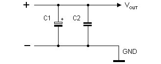
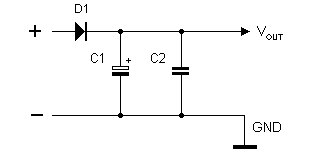
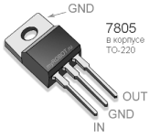
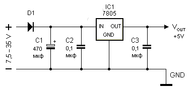
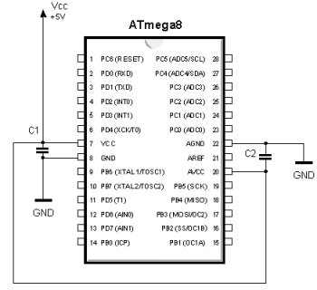
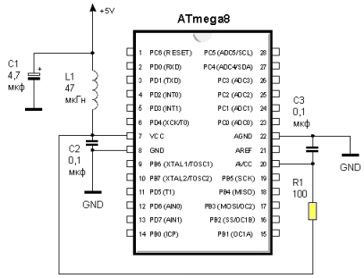
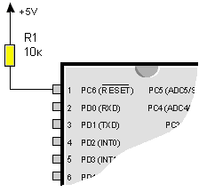
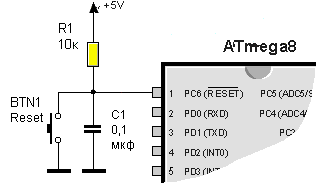
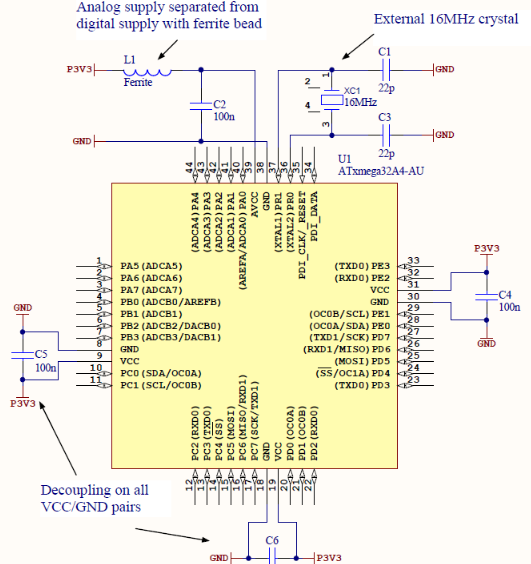

Хотя в datasheets указывается максимальное рекомендуемое напряжение в 5,5 В, тем не менее на практике очень часто используют напряжение питания 6 В: микроконтроллер AVR можно запитать от четырех батарей по 1,5 В.
Чтобы сгладить возможные броски напряжения, особенно в схемах с общим питанием для микросхем и моторов, параллельно питающим линиям включают электролитический конденсатор 100-1000 мкф (C1), который обычно дополняют керамическим конденсатором около 0,1 мкф (C2) для фильтрации высокочастотных и среднечастотных помех (точный номинал этого конденсатора можно расчитать только тогда, когда точно известна паразитная частота).

Кроме того, чтобы развязать питание моторов и микросхем, в положительную линию питания микроконтроллера включают диод, например, 1N4001 или 1N4004.

В экспериментальной и hobby-робототехнике часто применяют сборки батарей с напряжением 9 В и даже 12-вольтовые аккумуляторы. В этих случаях ставят пятивольтовый стабилизатор положительного напряжения КР142ЕН5А или его зарубежный аналог 7805.


Подключение питания к микроконтроллеру AVR
Среди микроконтроллеров AVR существуют микросхемы, имеющие двойное питание: "цифровое" (выводы VCC и GND) и "аналоговое" (AVCC и AGND, который часто обозначают просто GND). В стандартном включении выводы VCC и AVCC закорачивают между собой. Выводы GND уже замкнуты внутри микроконтроллера через сопротивление 0,7 Ом, и их обычно просто соединяют с "землей".

Керамические конденсаторы С1 и С2 емкостью 0,1 мкф располагают максимально близко от "своих" по схеме выводов. Если у микроконтроллера AVR нет вывода AVCC, то, вместо двух, ставят один конденсатор. На практике так часто поступают и для микросхем с двойным питанием.
Если используется встроенный аналогово-цифровой преобразователь (АЦП), то вывод AVCC подключают к напряжению питания VCC через резистор около 100 Ом. Кроме того, для уменьшения помех применяют последовательный LC-фильтр для питания.

Номинал индуктивности L1 может лежать в диапазоне 30...47 мкГн. Танталовый конденсатор C1 - 4,7 мкф.
RESET
RESET имеет внутренний резистор привязки к шине питания для увеличения помехозащищенности, который калибруется на фабрике при изготовлении микроконтроллера. Кроме того, микроконтроллеры AVR второго поколения имеют улучшенную защиту от кратковременных (brown-out) и полных (black-out) просадок питания. Исходя из этого в простых схемах на AVR иногда обходятся без дополнительных мер по отношению к выводу RESET и даже оставляют его висящим в "воздухе".
Такой подход может быть применим для экспериментального макетирования и любительских самоделок, но в промышленной автоматике может приводить к сбоям при помехах по питанию. В условиях сильных внешних помех сопротивление этого резистора (100-500 кОм) оказывается слишком большим, и при отсутствии на линии RESET сигнала высокого уровня может происходить случайный сброс микроконтроллера.
Существует несколько способов снижения риска непреднамеренного сброса. Один из самых простых - это подключить к линии RESET внешний подтягивающий резистор с рекомендуемым значением сопротивления от 4,7 до 10 кОм.

Для дополнительной защиты линии RESET от внешних помех рекомендуется также шунтировать ее на землю с помощью внешнего конденсатора емкостью около 0,1 мкф. Но при этом необходимо помнить, что вход внешнего сброса RESET может использоваться однопроводным интерфейсом debugWIRE при отладке программного обеспечения микроконтроллера. Наличие конденсатора, подключенного параллельно входу RESET, будет приводить к сбоям в работе этого интерфейса. Поэтому, если планируется отлаживать микроконтроллер на целевой плате с помощью debugWIRE, необходимо предусмотреть перемычку, чтобы отключать этот конденсатор на время отладки прикладного программного обеспечения.
Для поддержки режима высоковольтного программирования микроконтроллеры AVR не имеют стандартного внутреннего диода для защиты от избыточного напряжения на входе RESET. Поэтому, если высоковольтное программирование не используется, для защиты от помех рекомендуется подключать внешний диод, например 1N4148 между линией RESET и шиной питания микроконтроллера. Таким образом, типовая схема внешней "обвязки" для линии RESET будет выглядеть следующим образом:
Если же линия сброса не используется и внутрисхемное программирование не требуется, то в законченном устройстве вывод RESET может быть присоединен непосредственно к шине питания микроконтроллера.
При отладке сложных программ может понадобиться осуществление принудительного сброса микроконтроллера. В этом случае удобно добавить в схему кнопку сброса, замыкание контактов которой будет подавать сигнал низкого уровня на вход RESET. Кнопку сброса обычно подключают вместе со стандартной RC-цепочкой.
Контакты кнопки при внутрисхемном программировании должны обязательно находиться в разомкнутом состоянии.

Апноут 2521 (AVR Hardware Design Considerations).
Basic Schematic of Required/Recommended Connections
22pF